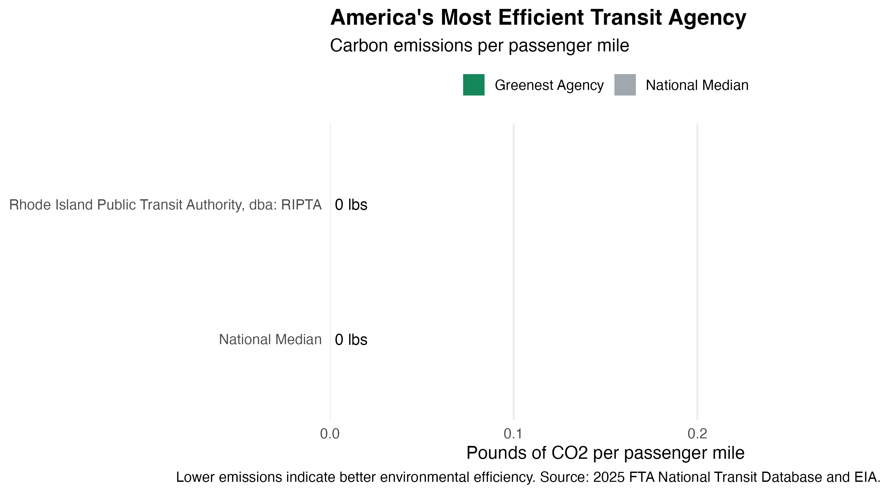
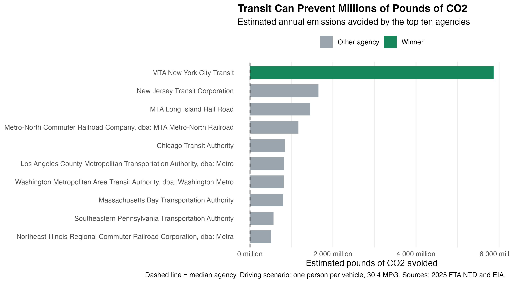

CO2_MWh primary_source electricity_price_MWh generation_MWh state
1 747 Natural gas 119.0 142921216 Alabama
2 1196 Natural gas 221.7 6690506 Alaska
3 634 Natural gas 127.4 116026511 Arizona
4 960 Natural gas 95.9 61542484 Arkansas
5 407 Natural gas 270.4 214191383 California
abbreviation
1 AL
2 AK
3 AZ
4 AR
5 CA
Task 1b: Data Acquisition - NTD Energy Usage
load_ntd_energy <-function(){library(readxl)library(httr2)library(tidyverse)library(fs)# Create 'data/mp02' directory if not already present DATA_DIR <- fs::path("data", "mp02") fs::dir_create(DATA_DIR, recurse=TRUE) NTD_ENERGY_FILE <- fs::path(DATA_DIR, "2025_ntd_energy.xlsx")# error in pulling data from the website so i manually downloaded instea# if(!fs::file_exists(NTD_ENERGY_FILE)){# library(httr2)# # request("https://www.transit.dot.gov/") |># req_url_path("sites",# "fta.dot.gov",# "files",# "2026-09",# "2025 Energy Consumption_260806.xlsx") |> # req_headers(# `User-Agent` = "Mozilla/5.0 (Macintosh; Intel Mac OS X 10.15; rv:149.0) Gecko/20100101 Firefox/149.0") |> # req_perform(NTD_ENERGY_FILE)# }# # if(file.info(NTD_ENERGY_FILE)$size < 1e4){# cat("I was unable to download the NTD Energy File. Please try again.\n")# stop("Download failed. Please delete the corrupted file by running `unlink('data/mp02/2025_ntd_energy.xlsx')` and try again.")# } to_numeric_fill_0 <-function(x){ x <-if_else(x =="-", NA, x)replace_na(as.numeric(x), 0) }read_excel(NTD_ENERGY_FILE) |>select(-c(`Reporter Type`, `Reporting Module`, `Gallons of Other Fuel`, `Other Fuel Description`)) |>mutate(across(-c(`Agency Name`, `Mode`,`TOS`), to_numeric_fill_0)) |>group_by(`NTD ID`, `Mode`, `Agency Name`) |>summarize(across(where(is.numeric), sum), .groups ="keep") |>mutate(ENERGY =sum(c_across(c(where(is.numeric))))) |>filter(ENERGY >0) |>select(-ENERGY) |>ungroup()}NTD_ENERGY <-load_ntd_energy()
Warning: There was 1 warning in `mutate()`.
ℹ In argument: `across(-c(`Agency Name`, Mode, TOS), to_numeric_fill_0)`.
Caused by warning in `replace_na()`:
! NAs introduced by coercion
head(NTD_ENERGY, 5)
# A tibble: 5 × 16
`NTD ID` Mode `Agency Name` `Gallons of Bio-Diesel` `Bio-Diesel Description`
<dbl> <chr> <chr> <dbl> <dbl>
1 1 DR King County 0 0
2 1 FB King County 0 0
3 1 MB King County 139825 0
4 1 SR King County 0 0
5 1 TB King County 0 0
# ℹ 11 more variables: `Gallons of Bunker Fuel` <dbl>,
# `Gallons of Compressed Natural Gas` <dbl>, `Gallons of Diesel Fuel` <dbl>,
# `Kilowatt hours of Electric Battery` <dbl>,
# `Kilowatt hours of Electric Propulsion` <dbl>, `Gallons of Ethanol` <dbl>,
# `Gallons of Gasoline` <dbl>, `Gallons of Hydrogen` <dbl>,
# `Gallons of Kerosene` <dbl>, `Gallons of Liquified Nat Gas` <dbl>,
# `Gallons of Liquified Petroleum Gas` <dbl>
Task 1c: Data Acquisition - Service Provided
load_ntd_service <-function(){library(httr2)library(tidyverse)library(fs)# Create 'data/mp02' directory if not already present DATA_DIR <- fs::path("data", "mp02") fs::dir_create(DATA_DIR, recurse=TRUE) NTD_SERVICE_FILE <- fs::path(DATA_DIR, "2025_ntd_service.csv")if(!fs::file_exists(NTD_SERVICE_FILE)){library(httr2)request("https://data.transportation.gov/resource/4fir-qbim.csv") |>req_url_query(`$query`=paste("SELECT `_5_digit_ntd_id` AS `NTD_ID`", "`max_agency` AS `AGENCY`","`max_reporter_type` AS `reporter_type`","`max_organization_type` AS `organization_type`","`max_city` AS `city`","`max_state` AS `state`","`mode`","`type_of_service`","`max_primary_uza_code` as `uza_code`","`max_primary_uza_name` as `uza_name`","`max_primary_uza_area_sq_miles` as `uza_sq_miles`","`max_primary_uza_population` as `uza_population`","`max_service_area_sq_miles` as `service_area_sq_miles`","`max_service_area_population` as `service_area_population`","`questionable_record` as `flagged_likely_inaccurate`","`sum_unlinked_passenger_trips_upt` as `total_upt`","`sum_passenger_miles` WHERE caseless_one_of(`report_year`, '2025') limit 50000", sep=",")) |>req_headers(`User-Agent`="Mozilla/5.0 (Macintosh; Intel Mac OS X 10.15; rv:149.0) Gecko/20100101 Firefox/149.0") |>req_perform(NTD_SERVICE_FILE) }if(file.info(NTD_SERVICE_FILE)$size <1e4){cat("I was unable to download the NTD Service File. Please try again.\n")stop("Download failed. Please delete the corrupted file by running `unlink('data/mp02/2025_ntd_service.xlsx')` and try again.") }read_csv(NTD_SERVICE_FILE) |>mutate(flagged_likely_inaccurate =!is.na(flagged_likely_inaccurate))}NTD_SERVICE <-load_ntd_service()
Rows: 3762 Columns: 17
── Column specification ────────────────────────────────────────────────────────
Delimiter: ","
chr (11): NTD_ID, AGENCY, reporter_type, organization_type, city, state, mod...
dbl (6): uza_sq_miles, uza_population, service_area_sq_miles, service_area_...
ℹ Use `spec()` to retrieve the full column specification for this data.
ℹ Specify the column types or set `show_col_types = FALSE` to quiet this message.
head(NTD_SERVICE, 5)
# A tibble: 5 × 17
NTD_ID AGENCY reporter_type organization_type city state mode
<chr> <chr> <chr> <chr> <chr> <chr> <chr>
1 00001 King County, dba: Ki… Full Reporter City, County or … Seat… WA DR
2 00001 King County, dba: Ki… Full Reporter City, County or … Seat… WA DR
3 00001 King County, dba: Ki… Full Reporter City, County or … Seat… WA FB
4 00001 King County, dba: Ki… Full Reporter City, County or … Seat… WA MB
5 00001 King County, dba: Ki… Full Reporter City, County or … Seat… WA MB
# ℹ 10 more variables: type_of_service <chr>, uza_code <chr>, uza_name <chr>,
# uza_sq_miles <dbl>, uza_population <dbl>, service_area_sq_miles <dbl>,
# service_area_population <dbl>, flagged_likely_inaccurate <lgl>,
# total_upt <dbl>, sum_passenger_miles <dbl>
Data Cleaning and Preparation
Task 2: Recoding the Mode column
The followings are the modes included in our dataset.
NTD_ENERGY %>%distinct(Mode)
# A tibble: 17 × 1
Mode
<chr>
1 DR
2 FB
3 MB
4 SR
5 TB
6 VP
7 CB
8 RB
9 LR
10 MG
11 CR
12 AR
13 TR
14 HR
15 YR
16 IP
17 CC
# A tibble: 5 × 3
`NTD ID` `Agency Name` Total_Gallons
<dbl> <chr> <dbl>
1 20008 MTA New York City Transit 1719946558
2 30030 Washington Metropolitan Area Transit Authority 670139097
3 20100 MTA Long Island Rail Road 599193200
4 20080 New Jersey Transit Corporation 460763475
5 20078 Metro-North Commuter Railroad Company, dba: MTA Metro-… 459963403
Across all US public transit, visualize the amounts of each type of fuel used (Graph)
library(scales)
Attaching package: 'scales'
The following object is masked from 'package:purrr':
discard
The following object is masked from 'package:readr':
col_factor
The average trip length for MTA NYC is 3.2 miles per trip.
Which transit service in NYC has the longest average trip length? (Inline)
Hint: You need to be careful with the City column here. Certain MTA services are officially located in “New York City” while others are located in Brooklyn.)
In what metro area were the most gallons of bio-diesel used by public transit agencies?
NB: You are not required to actually include your answers to these questions in your submission. You will demonstrate knowledge of proper joining strategies in next section (Data Analysis) and your final deliverable. This is just a set of ‘warmups’ to help you orient yourself.
names(NTD_ENERGY)
[1] "NTD ID"
[2] "Mode"
[3] "Agency Name"
[4] "Gallons of Bio-Diesel"
[5] "Bio-Diesel Description"
[6] "Gallons of Bunker Fuel"
[7] "Gallons of Compressed Natural Gas"
[8] "Gallons of Diesel Fuel"
[9] "Kilowatt hours of Electric Battery"
[10] "Kilowatt hours of Electric Propulsion"
[11] "Gallons of Ethanol"
[12] "Gallons of Gasoline"
[13] "Gallons of Hydrogen"
[14] "Gallons of Kerosene"
[15] "Gallons of Liquified Nat Gas"
[16] "Gallons of Liquified Petroleum Gas"
# Aggregate biodiesel consumption by agencybiodiesel <- NTD_ENERGY |>mutate(`NTD ID`=as.character(`NTD ID`)) |>group_by(`NTD ID`) |>summarize(biodiesel_gallons =sum(`Gallons of Bio-Diesel`,na.rm =TRUE ),.groups ="drop" )# Get metro area for each agencyagency_metro <- NTD_SERVICE |>mutate(NTD_ID =as.character(NTD_ID)) |>distinct(NTD_ID, uza_name)# Join and rank metropolitan areasbiodiesel_metro <- biodiesel |>inner_join( agency_metro,by =c("NTD ID"="NTD_ID") ) |>group_by(uza_name) |>summarize(total_biodiesel =sum(biodiesel_gallons, na.rm =TRUE),.groups ="drop" ) |>arrange(desc(total_biodiesel))# Display metro area with highest biodiesel consumptionbiodiesel_metro |>slice_head(n =1)
# A tibble: 1 × 2
uza_name total_biodiesel
<chr> <dbl>
1 Los Angeles--Long Beach--Anaheim, CA 9466431
Data Analysis
Task 5: Calculate Emissions
library(tidyverse)# Prepare state informationagency_state <- NTD_SERVICE |>mutate(NTD_ID =as.character(NTD_ID),mode =as.character(mode),state =str_trim(state),abbreviation =if_else(nchar(state) ==2,toupper(state), state.abb[match(state, state.name)] ) ) |>distinct(NTD_ID, mode, state, abbreviation)# Prepare energy dataenergy_data <- NTD_ENERGY |>mutate(`NTD ID`=as.character(`NTD ID`),Mode =as.character(Mode) )# Join energy and service informationenergy_service <- energy_data |>left_join( agency_state,by =c("NTD ID"="NTD_ID", "Mode"="mode") )# Join state electricity emissions factorsFINAL_EMISSIONS <- energy_service |>left_join( EIA_SEP_REPORT |>select(abbreviation, CO2_MWh),by ="abbreviation" )# Calculate total CO2 emissionsFINAL_EMISSIONS <- FINAL_EMISSIONS |>mutate(total_CO2_lbs =# Biodiesel: 20.83 lbs/gallon`Gallons of Bio-Diesel`*20.83+# Bunker fuel: residual fuel oil proxy`Gallons of Bunker Fuel`*24.78+# CNG: assumes gallons are gasoline-gallon equivalents`Gallons of Compressed Natural Gas`*22.40+# Diesel: 22.45 lbs/gallon`Gallons of Diesel Fuel`*22.45+# Ethanol: 12.68 lbs/gallon`Gallons of Ethanol`*12.68+# Gasoline: 18.73 lbs/gallon`Gallons of Gasoline`*18.73+# Kerosene: 21.78 lbs/gallon`Gallons of Kerosene`*21.78+# LNG: 9.92 lbs/gallon`Gallons of Liquified Nat Gas`*9.92+# LPG: propane-based factor`Gallons of Liquified Petroleum Gas`*12.68+# Hydrogen: zero direct CO2 from combustion`Gallons of Hydrogen`*0+# Electricity: convert kWh to MWh (`Kilowatt hours of Electric Battery`+`Kilowatt hours of Electric Propulsion` ) /1000* CO2_MWh )FINAL_EMISSIONS |>summarize(total_rows =n(),total_emissions =sum(total_CO2_lbs, na.rm =TRUE),zero_emissions =sum(total_CO2_lbs ==0, na.rm =TRUE),missing_CO2 =sum(is.na(CO2_MWh)) )
# A tibble: 1,134 × 20
`NTD ID` Mode `Agency Name` Gallons of Bio-Diese…¹ Bio-Diesel Descripti…²
<chr> <chr> <chr> <dbl> <dbl>
1 1 Demand … King County 0 0
2 1 Ferrybo… King County 0 0
3 1 Bus King County 139825 0
4 1 Streetc… King County 0 0
5 1 Trolley… King County 0 0
6 1 Vanpool King County 0 0
7 2 Demand … Spokane Tran… 0 0
8 2 Bus Spokane Tran… 0 0
9 2 Vanpool Spokane Tran… 0 0
10 3 Demand … Pierce Count… 0 0
# ℹ 1,124 more rows
# ℹ abbreviated names: ¹`Gallons of Bio-Diesel`, ²`Bio-Diesel Description`
# ℹ 15 more variables: `Gallons of Bunker Fuel` <dbl>,
# `Gallons of Compressed Natural Gas` <dbl>, `Gallons of Diesel Fuel` <dbl>,
# `Kilowatt hours of Electric Battery` <dbl>,
# `Kilowatt hours of Electric Propulsion` <dbl>, `Gallons of Ethanol` <dbl>,
# `Gallons of Gasoline` <dbl>, `Gallons of Hydrogen` <dbl>, …
Task 6: Normalize Emissions to Transit Usage Using the total emissions calculated above, compute the emissions:
Per UPT; and
Per passenger mile
Which agencies are most efficient on these bases? You may want to filter out extremely small agencies and to create “small”, “medium”, and “large” agencies so that you can give multiple awards.
Note that transit usage is reported at the Agency level, so you may need to sum emissions across multiple modes.
The most efficient small transit agency is Brockton Area Transit Authority, with 0 pounds of CO2 per UPT.
The most efficient medium transit agency is Lowell Regional Transit Authority, dba: LRTA, with 0 pounds of CO2 per UPT.
The most efficient large transit agency is Rhode Island Public Transit Authority, dba: RIPTA, with 0 pounds of CO2 per UPT.
Emissions per passenger mile:
The most efficient small transit agency is Brockton Area Transit Authority, with 0 pounds of CO2 per passenger mile.
The most efficient medium transit agency is Lowell Regional Transit Authority, dba: LRTA, with 0 pounds of CO2 per passenger mile.
The most efficient large transit agency is Rhode Island Public Transit Authority, dba: RIPTA, with 0 pounds of CO2 per passenger mile.
Task 7: Determine Award Winners
# ConstantsCAFE_MPG <-30.4GASOLINE_CO2 <-19.59# Keep agencies with at least 10,000 UPTaward_data <- agency_efficiency |>filter( total_upt >=10000, total_pmt >0, total_CO2_lbs >=0 ) |>mutate(# Estimated emissions if all passenger miles were drivendriving_gallons = total_pmt / CAFE_MPG,driving_CO2_lbs = driving_gallons * GASOLINE_CO2,# Emissions avoided by using transitemissions_avoided = driving_CO2_lbs - total_CO2_lbs )# AWARD 1: Greenest Transit Agencygreenest <- award_data |>slice_min( emissions_per_passenger_mile,n =1,with_ties =FALSE )# AWARD 2: Most Emissions Avoidedmost_avoided <- award_data |>slice_max( emissions_avoided,n =1,with_ties =FALSE )
Award 1: Greenest Transit Agency
The Greenest Transit Agency award goes to Rhode Island Public Transit Authority, dba: RIPTA, with emissions of 0 pounds of CO₂ per passenger mile.
Award 2: Most Emissions Avoided
The Most Emissions Avoided award goes to MTA New York City Transit, which avoided an estimated 6,135,752,234 pounds of CO₂ compared with individual driving.
Press Release
library(tidyverse)library(scales)# Use the same eligible agencies for all award comparisonsaward_data <- agency_efficiency |>filter( total_upt >=10000, total_pmt >0, total_CO2_lbs >=0 ) |>mutate(driving_CO2_lbs = (total_pmt /30.4) *18.73,emissions_avoided = driving_CO2_lbs - total_CO2_lbs )# Award winnersgreenest <- award_data |>slice_min(emissions_per_passenger_mile, n =1)most_avoided <- award_data |>slice_max(emissions_avoided, n =1)worst_agency <- award_data |>slice_max(emissions_per_passenger_mile, n =1)# Median reference valuesmedian_efficiency <-median( award_data$emissions_per_passenger_mile,na.rm =TRUE)median_avoided <-median( award_data$emissions_avoided,na.rm =TRUE)median_UPT <-median( award_data$emissions_per_UPT,na.rm =TRUE)# Electric Pioneerelectricity_by_agency <- NTD_ENERGY |>mutate(`NTD ID`=as.character(`NTD ID`),electric_kwh =coalesce(`Kilowatt hours of Electric Battery`, 0) +coalesce(`Kilowatt hours of Electric Propulsion`, 0) ) |>group_by(`NTD ID`, `Agency Name`) |>summarize(total_modes =n_distinct(Mode),electric_modes =n_distinct(Mode[electric_kwh >0]),electric_mode_share = electric_modes / total_modes,.groups ="drop" )electric_winner <- electricity_by_agency |>slice_max(electric_mode_share, n =1)median_electric <-median( electricity_by_agency$electric_mode_share,na.rm =TRUE)# Reference driving emissions per passenger milecar_emissions_per_mile <-18.73/30.4
GTA IV Green Trnansit Awards: Who is the winner? The most environmentally friendly Transit Agency!
FOR IMMEDIATE RELEASE
November 5, 2026
Each year, GTA awards prizes to the small, medium, and large transit agencies that score the highest on the GTA Value Index (GTA VI). Our analysis will bring in data from two federal sources, the National Transit Database and the Energy Information Administration.
The Greenest Transit Agency award recognizes the agency with the lowest carbon dioxide emissions per passenger mile. To calculate this metric, the total emissions were divided by total passenger miles travelled. Emissions from all reported transit modes were conbined at the agency level. This allows agencies of different sizes become more comparable.
Emissions per UPT:
The most efficient small transit agency is Brockton Area Transit Authority, with 0 pounds of CO2 per UPT.
The most efficient medium transit agency is Lowell Regional Transit Authority, dba: LRTA, with 0 pounds of CO2 per UPT.
The most efficient large transit agency is Rhode Island Public Transit Authority, dba: RIPTA, with 0 pounds of CO2 per UPT.
Emissions per passenger mile:
The most efficient small transit agency is Brockton Area Transit Authority, with 0 pounds of CO2 per passenger mile.
The most efficient medium transit agency is Lowell Regional Transit Authority, dba: LRTA, with 0 pounds of CO2 per passenger mile.
The most efficient large transit agency is Rhode Island Public Transit Authority, dba: RIPTA, with 0 pounds of CO2 per passenger mile.
The Greenest Transit Agency award goes to Rhode Island Public Transit Authority, dba: RIPTA, with emissions of 0 pounds of CO₂ per passenger mile.

Greenest Transit Agency comparison
The Most Emissions Avoided award recognizes the transit agency that prevented the greatest amount of CO2 emissions by providing public transportation instead of requiring everybody to drive individually. To calculate this metric, total passenger miles were divided by the vehicle fuel economy. Actual transit emissions is subtracted from estimated individual driving emissions.
The Most Emissions Avoided award goes to MTA New York City Transit, which avoided an estimated 5,866,393,025 pounds of CO₂ compared with individual driving.

Most Emissions Avoided
The GTA IV Green Transit Awards shows how the public transportation agencies are performing on the enviornmental basis at different levels. The data presented is valuable to measure their performances such as the amount of emissions produced, avoided, and how efficient the vehicles in the specific agencies are. Public transportation is an important alternative method for individuals to travel around the city, it will be essential for the public to consider what is best for the current environment.
With the awards being recognized to the above two transit agencies, the public could have sufficient knowledge to compare and consider the transit mode and transit agencies to pick. The public could make a SMART decision when it comes to travelling around. However, the emissions only estimates the CO2 produced by vehicles selected. There could be other factors that have not been made into the consideration when the “Greenest” award is recognized.
Congratulations to all the award winners!
Media Contact: HUI GAO @ hui.gao63@baruchmail.cuny.edu
NoteAI Usage Statement
ChatGPT was used to help write the code in this project, but all non-code text was generated without the use of any Generative AI tools. Additionally, ChatGPT was used to provide additional background information on the topic and to brainstorm ideas for the final open-ended prompt.